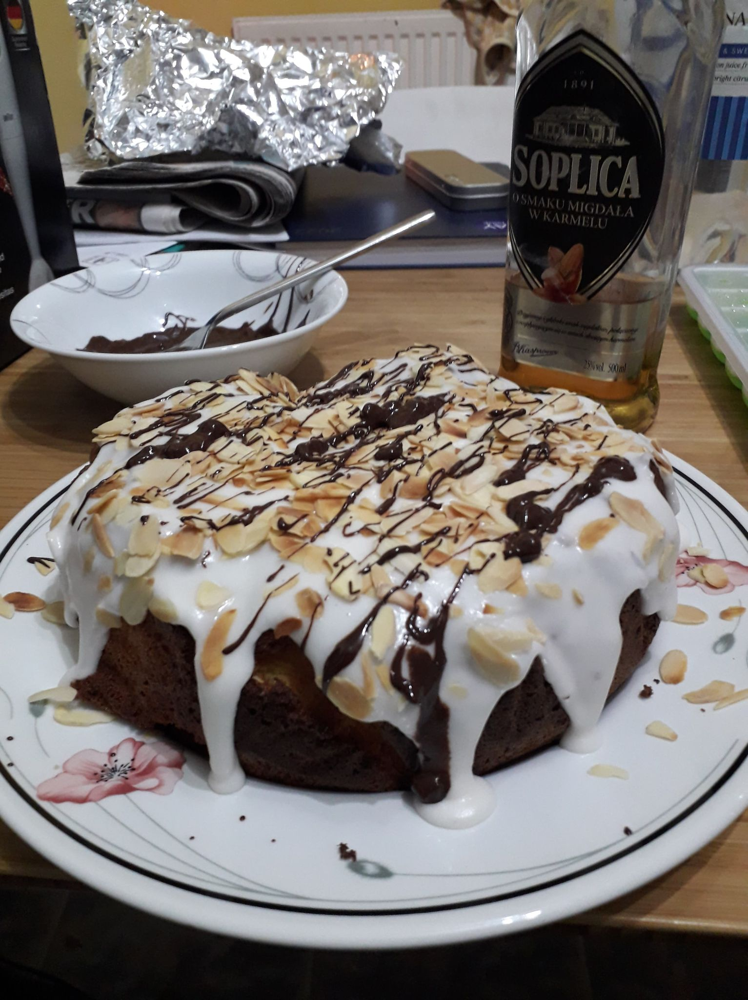

Home
Orange and Amaretto Cake (dairy and gluten free)

Description
A light, summery treat that will take you to the Mediterranean countryside. Delicious with your favourite
almond-flavoured tipple with ice!
Ingredients
Cake batter
- 225g ground almonds
- 200g caster sugar
- 5 eggs, separated*
- 1 1/2 oranges, chopped and pips removed (hold on to remainding half for topping)
Topping
- Good amount of icing sugar
- A few shots of almond-flavoured liquor/spirit (Disaranno, Soplica almond and caramel vodka etc)
- Flaked almonds
- Dairy-free dark chocolate - orange chocolate works well!
- Orange zest
Method
- Pre heat the oven to 180C/160C fan/gas 4. Line a springform cake tin with baking paper.
- Place the oranges in a sauce pan with 1 tbsp of water. Bring to a simmer and continue to cook for 30
minutes, or until the fruit is soft. Leave to cool.
- When the oranges are cool, use a hand blender to blitz into a thick pulp. Ensure the puree still has
texture, it should not be smooth.
- In a separate bowl, whisk the egg whites until they form stiff peaks. Gradually whisk in half of the sugar,
and whisk for a further minute.
- In another bowl, beat the egg yolks with the rest of the sugar, until smooth. Combine with the oranges, and
fold in the ground almonds.
- Stir in 3 spoonfuls of the egg whites, and when combined, fold in the rest of the egg whites.
- Pour the mixture into the cake tin and bake for 55 minutes, until golden and a skewer can be inserted and
come out clean. If the cake starts to brown to quickly, cover with foil.
- Leave to cool
- Toast flaked almonds in frying pan, without any oil, until golden brown. Careful - they will be very hot!
- Sieve icing sugar into large bowl. Then gradually add the alcohol until desired consistency. Spread over cooled cake.
- Scatter over flaked almonds.
- Melt 2-4 squares of chocolate gradually in the microwave, then use a fork to flick over the top of the cake. Sprinkle over orange zest if desired.
- Enjoy!
Variations of this recipe could include using a mix of oranges and lemons, and limoncello in the icing. Let your imagination run wild!